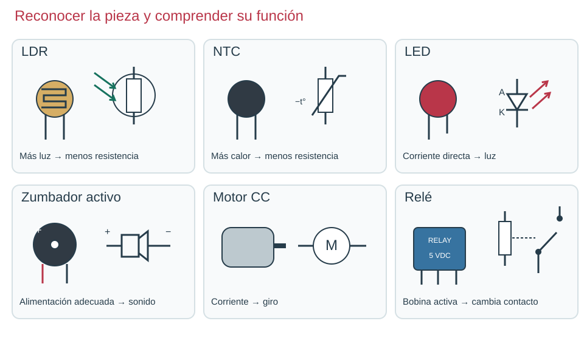

Contenido

Cómo vamos a trabajar
Cada página del libro es una clase; el proyecto final ocupa dos y la última sirve para repasar antes del examen. Primero aprenderás a medir y a montar circuitos en un simulador: un programa que funciona como un laboratorio en la pantalla, donde puedes equivocarte sin romper nada. Después pasarás al taller, donde montarás los mismos circuitos con piezas reales sobre una placa de pruebas.
| Herramienta | Para qué la usarás | Dónde aparece |
|---|---|---|
| Tinkercad Circuits | Montar circuitos y medirlos en el ordenador | Desde la primera clase |
| CircuitJS | Ver cómo cambia una tensión con el tiempo | Diodos y Sensores |
| Polímetro y protoboard | Medir y montar con piezas reales | Desde «La protoboard y el polímetro» |
Qué entregarás
| Tarea de Moodle | Quién | Qué subes |
|---|---|---|
| Informe de prácticas | Tú | Las dos prácticas de CircuitJS (cuando las hagas) y, al final, informe_practicas.pdf |
| Prácticas en protoboard | Tu equipo | comprobacion_equipo.pdf y la demostración de vuestro circuito |
| Prueba de simulación | Tú, en clase | prueba_simulacion.pdf |
| Examen · Electrónica analógica | Tú, en papel | Nada: es un examen escrito |
Tus documentos de trabajo
Cada enlace abre una pantalla de Google Docs con el botón Hacer una copia. Púlsalo: la copia se guarda en tu Google Drive y es tuya. Al final, en tu copia, elige Archivo → Descargar → Documento PDF y sube ese PDF a Moodle.
- Informe de prácticas (individual: lo vas completando en cada clase).
- Comprobación del equipo (una por equipo, para las prácticas del taller).
- Prueba de simulación (solo el día de la prueba).
Podéis compartir las fotos y capturas del equipo, pero cada persona escribe sus explicaciones. No pongas nombres ni fotos de personas en las entregas.
Las normas del taller
- Usa solo la fuente de 5 V del taller. Ningún circuito de este libro se conecta a un enchufe.
- Desconecta la fuente antes de cambiar un cable o una pieza.
- Revisa el circuito con tu compañero antes de conectar la fuente.